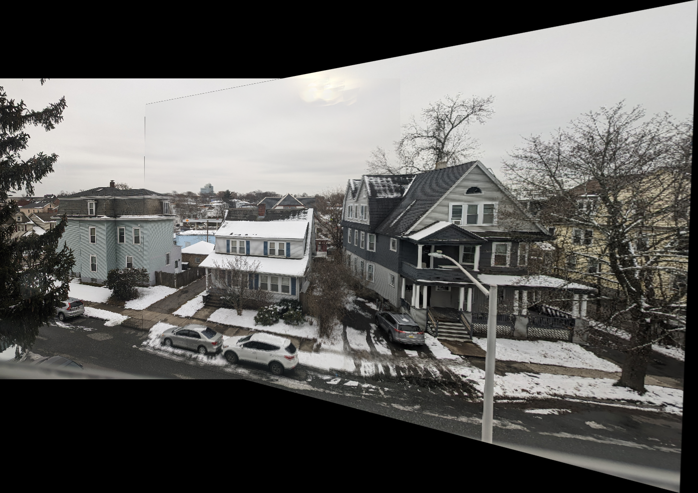

|
Miheer Diwan Robotics Engineer I'm a Robotics Master's student at Worcester Polytechnic Institute (WPI) with a primary focus in Perception. I am currently completing a Master's Thesis in ""Automated Guidance for Lumbar Puncture Process"" which parallels to my interest in Vision for Medical Robtoics. |

|

|

|
|

|

|

|
|
Grader, Computer Vision Graduate Course WPI Jan 2024 - Present |
Engineering Development Group, Intern MathWorks May 2023 - Aug 2023 |
Master's in Robotics Engineering' Worcester Polytechnic Institute 2022-2023 |
Engineering Intern Cummins Inc., Pune Apr 2022 - May 2022 |
Product Developer Intern 4Dimensions Infotech, Pune Nov 2021 - Feb 2022 |
B.Tech Mechanical Engineering (Minor in Robtoics & Automation) MIT-WPU, Pune 2018-2022 |

|
Ultrasound-Guided Safe Region Localization for Lumbar Puncture
• Created an advanced image processing pipeline to pinpoint precise needle entry sites in lumbar puncture procedures. • Processed ultrasound images using OpenCV to segment regions in lumbar data. • Developed a state-of-the-art computer vision algorithm that harnesses ultrasound images and the probe poses to generate a 3D point cloud using PCL libraries in Python. • Winner of People’s Choice Award at the 2024 Graduate Research Innovation Exchange GRIE for poster presentation on ”Image Guidance and Needle Trajectory Planning for Lumbar Puncture using Ultrasound Images." |

|
Automatic Needle Navigation and Insertion for Lumbar Puncture
• Extending the MRI-US registration process to 3D-3D space using Iterative Closest Point (ICP) algorithm • Developing needle navigation and insertion algorithm for a manipulator with force feedback |
Projects |

|
Visual Inertial Odometry (VIO)
GitHub
Implemented advanced Multi-State Constraint Kalman Filter (MSCKF) following a paper for robust sensor fusion |

|
Neural Radience Fields (NeRF)
GitHub
Implemented NeRF pipeline following this NeRF paper. |

|
Structure from Motion (SfM)
GitHub
Reconstructed a 3D scene and simultaneously extracted camera pose from given camera correspondences using Non/Linear triangulation, Non/Linear PnP and Bundle Adjustment for optimization. |
|

|
AutoPano
GitHub
Stitched images having overlapping features to create a panorama using feature matching, ANMS, homography estimation, RANSAC. |

|
AutoCalib
Implemented algorithm to automate estimation of camera intrinsics using mathematical model proposed by Zhengyou Zhang. |